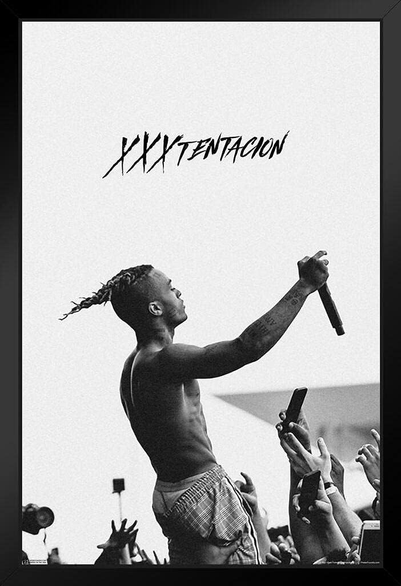
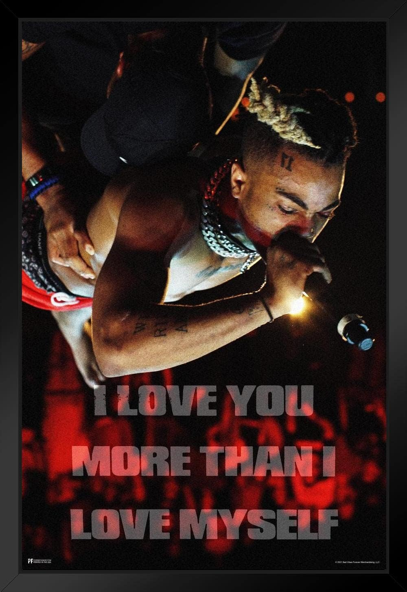

Hip-Hop Bio
Флоридский рэпер XXXTentacion построил свою карьеру, будучи названным самым спорным человеком рэпа. Его короткая, но впечатляющая карьера полна заголовков, подчеркивающих как величайшие, так и худшие моменты его жизни. Его наследие сложно, некоторые хвапятство его за честность и реальность в его песнях, касающихся его борьбы за психическое здоровье, а другие осуждают его за долгую историю насилия. Вот взгляд на всю его карьеру, жизнь и наследие.
learn more

Music style
XXXTentacion как художник был определен как универсальный, и его музыка была описана как имеющая "lo-fi" эстетику, будучи разнообразным и экспериментальным, и привлекая влияние хэви-метала. Его музыка также имеет тенденцию сдерживать искаженный бас и "умышленное отсутствие польского".
learn more